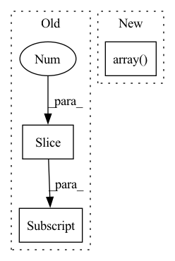

Pattern ID :39032
Before Change
opencell_datamgr_vanilla.const_dataloader()
group_annotation = np.tile(np.arange(3).reshape(-1, 1), (1, 2)).astype(object)
group_annotation[:2, 1] = "gp0"
group_annotation[2:, 1] = "gp1"
with assert_not_raises():
output = analysis_opencell.plot_umap_of_embedding_vector(
data_loader=opencell_datamgr_vanilla.test_loader,After Change
analysis_opencell.reset_umap()
opencell_datamgr_vanilla.const_dataset(label_format="index")
opencell_datamgr_vanilla.const_dataloader()
group_annotation = np.array( [[0, "gp0"], [1, "gp1"]], dtype=object)
with assert_not_raises():
output = analysis_opencell.plot_umap_of_embedding_vector(
data_loader=opencell_datamgr_vanilla.test_loader,
savepath=_file_name,In pattern: SUPERPATTERN
Frequency: 7
Non-data size: 3
Instances Fragment ID: 111189152
Project Name: royerlab/cytoself
Commit Name: fdc5c3f9d381e9a5d2ec581c1006e403ff86b365
Time: 2022-08-18
Author: liamiiliil@gmail.com
File Name: cytoself/analysis/test/test_analysis_opencell.py
M Class Name: AnonimousClass
N Class Name: AnonimousClass
M Method Name: test_plot_umap_of_embedding_vector_dataloader(3)
N Method Name: test_plot_umap_of_embedding_vector_dataloader(3)
M Parent Class:
N Parent Class:
M File Name: cytoself/analysis/test/test_analysis_opencell.py
N File Name: cytoself/analysis/test/test_analysis_opencell.py
M Start Line: 102
M End Line: 104
N Start Line: 129
N End Line: 141
Before Change
img = np.array(Image.open(os.path.join(config.ROOT_DIR, self.fname, img_name)).convert("RGB"))
if self.rect_training:
bboxes = [ann[1:] for ann in annotations if (ann[2] > 0 and ann[3] > 0)]
bboxes = torch.tensor(bboxes)
classes = torch.tensor([ann[0] for ann in annotations])
labels = torch.cat([classes.unsqueeze(1), bboxes], dim=-1)After Change
bboxes=np.roll(labels, axis=1, shift=4)
)
img = augmentations["image"]
labels = np.roll(np.array( augmentations["bboxes"]) , axis=1, shift=1)
if len(labels) > 0:
// bboxes = torch.tensor(bboxes).roll(dims=1, shifts=1) Fragment ID: 111189136
Project Name: alessandromondin/yolov5m
Commit Name: 6b474e8468a32129b9cc3499a6c96ef9cad8fbc3
Time: 2022-11-25
Author: alessandromondin00@gmail.com
File Name: dataset_ultra.py
M Class Name: MS_COCO_2017
N Class Name: MS_COCO_2017
M Method Name: __getitem__(2)
N Method Name: __getitem__(2)
M Parent Class: Dataset
N Parent Class: Dataset
M File Name: dataset_ultra.py
N File Name: dataset_ultra.py
M Start Line: 94
M End Line: 118
N Start Line: 99
N End Line: 128
Before Change
len(self.examples) - n_examples,
replace=False)
idx.sort()
idx = idx[::-1]
for i in idx.tolist():
self.examples.pop(i)
self.labels.pop(i)
else:After Change
len(self.examples) - n_examples,
replace=False)
idx.sort()
self.examples = numpy.array( self.examples, dtype="O") [idx].tolist()
self.labels = numpy.array(self.labels, dtype="O")[idx].tolist()
self.labels = [numpy.array(x) for x in self.labels]
else: Fragment ID: 111189138
Project Name: zj-zhang/amber
Commit Name: 6f4691e3a28a0618893ba88a3d14caeee96fde16
Time: 2020-07-06
Author: evancofer@gmail.com
File Name: amber/utils/sampler.py
M Class Name: BioIntervalSource
N Class Name: BioIntervalSource
M Method Name: __init__(5)
N Method Name: __init__(5)
M Parent Class: object
N Parent Class: object
M File Name: amber/utils/sampler.py
N File Name: amber/utils/sampler.py
M Start Line: 64
M End Line: 92
N Start Line: 64
N End Line: 90
Before Change
def update_contour(self):
self.contour[0:17] = self.face_3d[0:17]
if self.tracker.high_quality_3d:
self.contour[17:21] = self.face_3d[27:31]
else:
self.contour[17] = self.face_3d[30]
def adjust_3d(self):After Change
self.alive = True
def update_contour(self):
self.contour = np.array( self.face_3d[self.contour_pts])
def adjust_3d(self):
r = 1.0 + np.random.random_sample((66,3)) * 0.02 - 0.01
update_type = -1 Fragment ID: 111189155
Project Name: emilianavt/openseeface
Commit Name: 033a48b1322f01ca9f66554ba81e2f5c52419020
Time: 2020-02-27
Author: 38952746+emilianavt@users.noreply.github.com
File Name: tracker.py
M Class Name: FaceInfo
N Class Name: FaceInfo
M Method Name: update_contour(1)
N Method Name: update_contour(1)
M Parent Class:
N Parent Class:
M File Name: tracker.py
N File Name: tracker.py
M Start Line: 160
M End Line: 166
N Start Line: 161
N End Line: 161
Before Change
self.input_shape = input_shape[1:-1] if len(input_shape) == 4 else input_shape[:2]
def __call__(self, image, resize_method="bilinear", resize_antialias=False, input_shape=None):
input_shape = self.input_shape if input_shape is None else input_shape[:2]
image = tf.convert_to_tensor(image)
if tf.reduce_max(image) < 2:
image *= 255
image = tf.image.resize(image, input_shape, method=resize_method, antialias=resize_antialias)After Change
if input_shape is not None:
self.set_input_shape(input_shape)
images = [image] if len(np.shape(image)) == 3 else image
images = [np.array( Image.fromarray(image).resize(self.input_shape)) for image in images]
images = (np.stack(images) - self.mean) / self.std
images = images if backend.image_data_format() == "channels_last" else images.transpose([0, 3, 1, 2]) Fragment ID: 111189143
Project Name: leondgarse/keras_cv_attention_models
Commit Name: 2f70b0d51c8f2b1f8664f32dc75ecc1001758946
Time: 2023-01-29
Author: leondgarse@gmail.com
File Name: keras_cv_attention_models/common_layers.py
M Class Name: PreprocessInput
N Class Name: PreprocessInput
M Method Name: __call__(5)
N Method Name: __call__(5)
M Parent Class:
N Parent Class:
M File Name: keras_cv_attention_models/common_layers.py
N File Name: keras_cv_attention_models/common_layers.py
M Start Line: 586
M End Line: 601
N Start Line: 609
N End Line: 616
Before Change
pp.draw_point((x, y, 0.01), color=(0, 1, 0, 1))
for a, b, g in ABG[np.random.permutation(ABG.shape[0])][:10] :
c = mercury.geometry.Coordinate(
position=(x, y, 0),
quaternion=common_utils.get_canonical_quaternion(After Change
bounds = ((0.1, -0.5, 0.01), (0.6, 0.6, 0.01))
pp.draw_aabb(bounds)
XY = np.array(
list(
itertools.product(
np.linspace(bounds[0][0], bounds[1][0], num=10),
np.linspace(bounds[0][1], bounds[1][1], num=10),
)
)
)
ABG = np.array(
list(
itertools.product(
np.linspace(-np.pi / 2, np.pi / 2, num=5), Fragment ID: 111189135
Project Name: wkentaro/reorientbot
Commit Name: 9da4448c8ef6faba04a6317bb75ba40f547a03cd
Time: 2021-07-02
Author: www.kentaro.wada@gmail.com
File Name: examples/reorient/pickable_reorient_poses.py
M Class Name: AnonimousClass
N Class Name: AnonimousClass
M Method Name: get_reorient_poses(1)
N Method Name: get_reorient_poses(1)
M Parent Class:
N Parent Class:
M File Name: examples/reorient/pickable_reorient_poses.py
N File Name: examples/reorient/pickable_reorient_poses.py
M Start Line: 24
M End Line: 77
N Start Line: 21
N End Line: 87